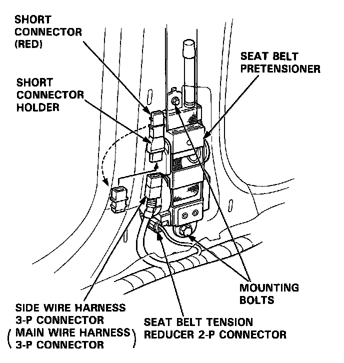
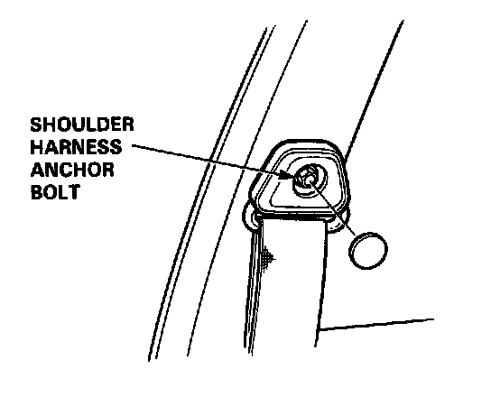

Seat Belt Pretensioner Removal
Seat Belt Pretensioner Removal
CAUTION:
- Do not install used SRS parts from another car: use only new SRS parts.
- Carefully inspect the seat belt pretensioner before installing it. Do not install a pretensioner that shows signs of being dropped or improperly handled, such as dents, cracks or deformation.
- The shoulder harness anchor bolt must be removed before you remove the pretensioner.
- After completing repair work, be sure to remove SRS short connector A.
1. Before disconnecting any part of the SRS wire harness, install the short connectors - refer to "Short Connector Installation" procedure.
2. Remove the rear seat, door trim, door sill molding and then the B pillar panel.
3. Disconnect the 3-P connector from the seat belt pretensioner, then disconnect the 2-P connector from the tension reducer.

4. Install the short connectors (RED) on the seat belt pretensioners.
5. Remove the shoulder harness anchor bolt, then remove the 2 seat belt pretensioner mounting bolts and the pretensioner.
